ミルモのまえがみクリップなどのガチャガチャでお馴染みのフクヤさんより、今度はゲーセンのプライズにてぬいぐるみが発売されました！
しかも『ましゅもっち』と『ピコぬい』の２種類という豪華ラインナップにびっくりです！
ぬいぐるみは２０２４年６月発売なのですでにゲットされている方も多いかと思います。
私もようやく一部をゲットできましたので、本記事にてレポートいたしますね！
（クレーンゲームが苦手な私なので、ゲーセンではなくメルカリでゲットしています^^;）
まずはゲーセンの設置模様から。
６月３０日（土）の朝に、新しいミルモぬいを求めて池袋へ行ってきました。
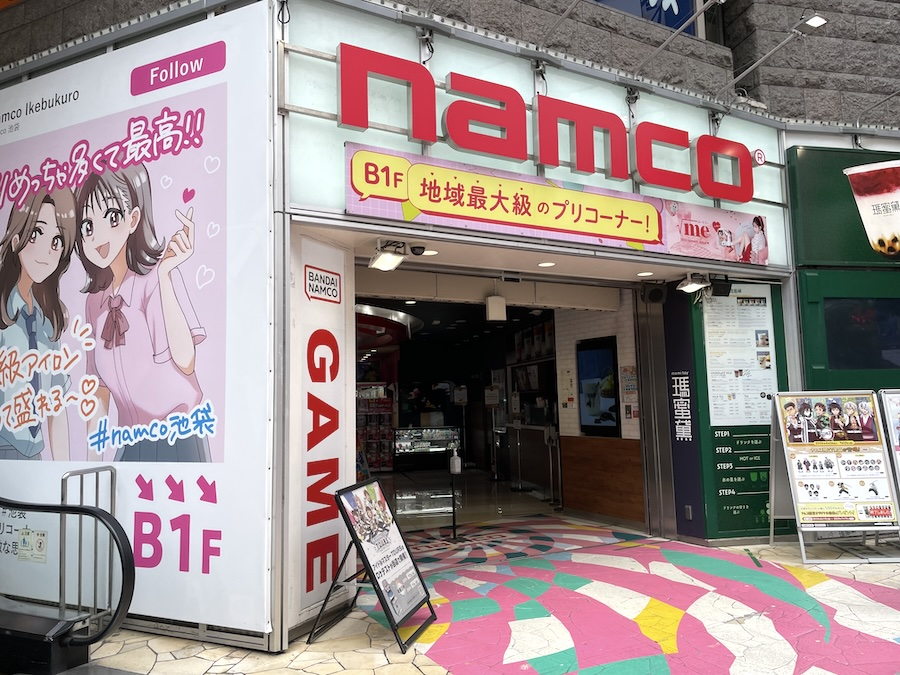
取り扱い店舗はナムコ系列のゲーセンに限られるようで、池袋駅東口にある「ｎａｍｃｏ池袋店」へGo！
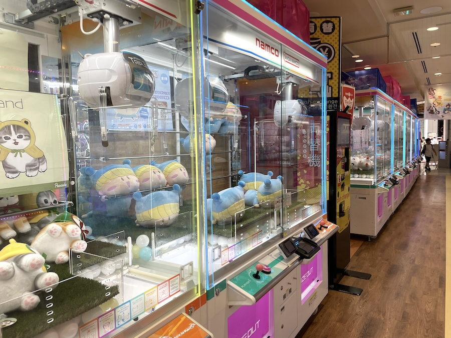
早速『ましゅもっち』を発見！
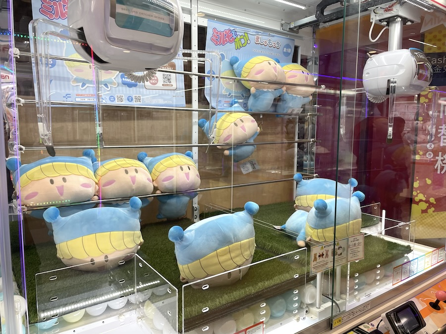
「早く取ってくれ〜〜っ」というミルモたちの心の声が聞こえてきそうです(^◇^;)
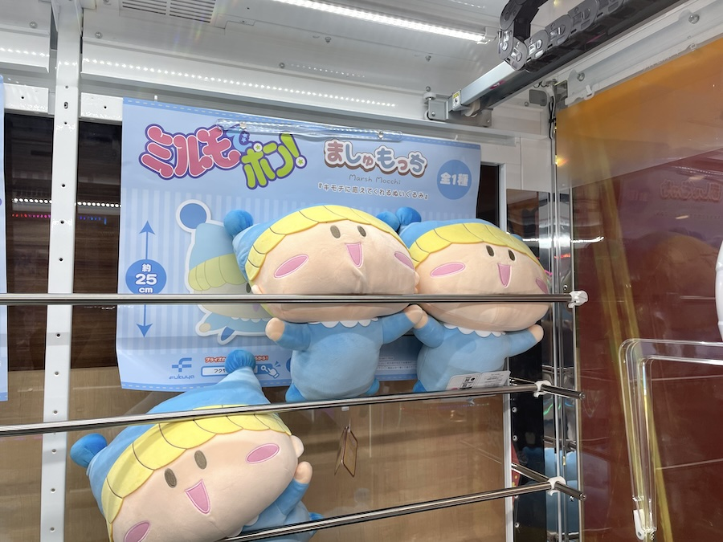
この飾られ方がかわいくて、店員さんのセンスを感じてしまいます。
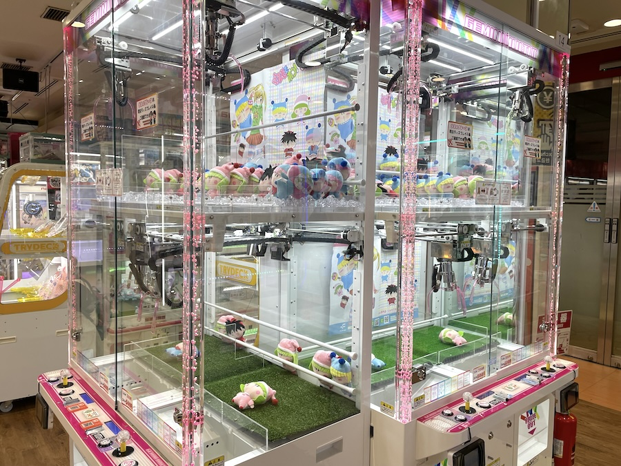
ちょっと離れた場所に、『ピコぬい』も発見！
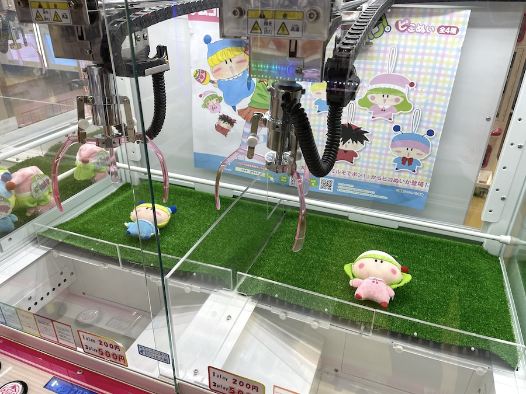
この堂々とした設置を見せられると、「取れるものなら取ってみろ」「ですわ〜」な声が聞こえてくるなぁ。
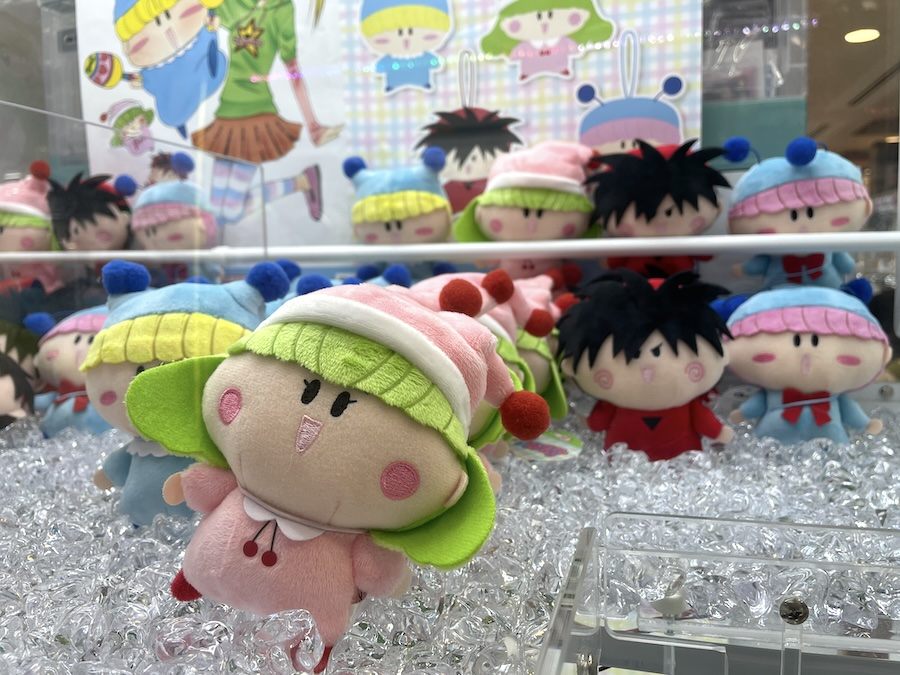
クレーンゲームの上段は商品ディスプレイになっていて、たくさんのピコぬいが並べられていてかわいい！
１回２００円という料金設定に怖気付いて、この日は１回もプレイせずに退散しました。。
他のお店だとどんな料金設定だったのでしょーか？
ゲーセンでゲットされた方の体験談（苦労談？）を聞いてみたいです。
ここからはメルカリでゲットしたぬいぐるみたちを紹介しますね。
私はメルカリにて以下の金額でゲットしました。
・ましゅもっち 2,222円
・ピコぬい（ミルモ＆ヤシチ＆ムルモのセット） 4,888円
クレーンゲーム代と往復の電車賃を考えると、メルカリでゲットした方が安い気がしてしまいます・・
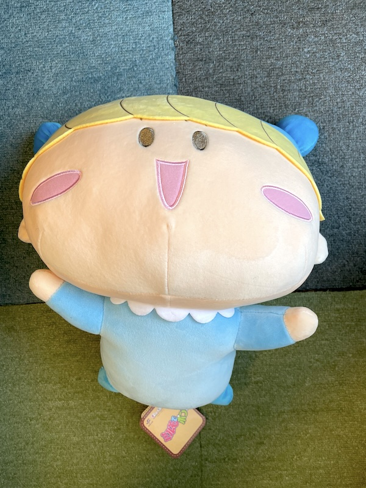
まずは『ましゅもっち』です。
約25cmのサイズなので結構デカいです。
商品名の通りマシュマロみたいなすべすべの手触りがとても気持ちいいです〜。
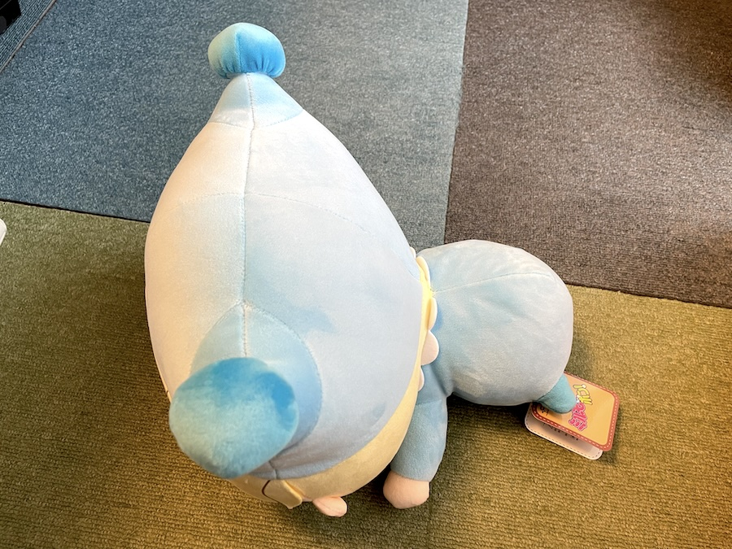
ましゅもっちを上から撮影。
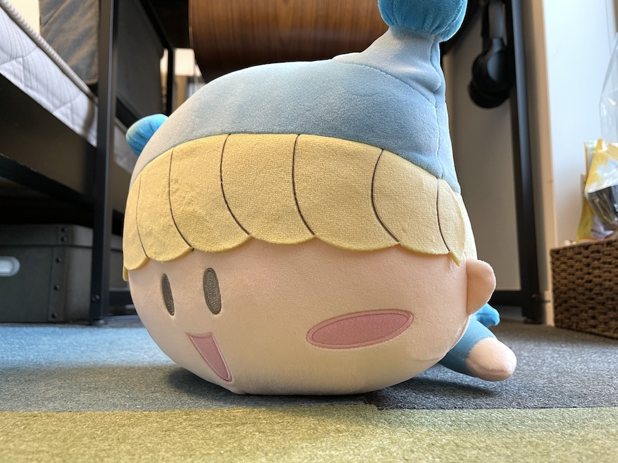
う〜ん、自宅で撮影するとあまりかわいく撮れない・・＞＜
（そう考えるとゲーセンの店員さんはディスプレイのプロなんだろうなぁ）
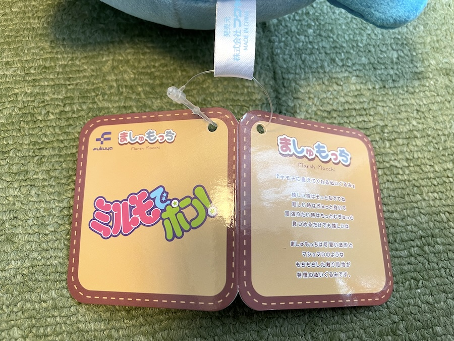
ましゅもっちのタグです。
タグに記載の通り、ホントにマシュマロみたいにもちもちしてます。
おっと、マシュマロ好きの妖精が商品化されなかったことで機嫌悪くしていそうだ・・。
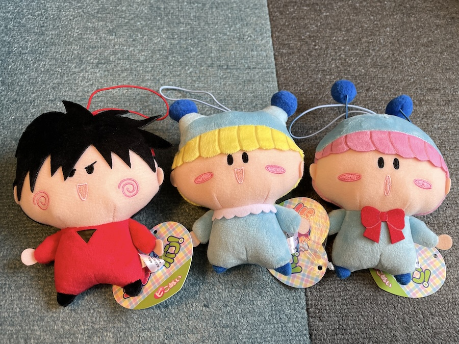
こちらは『ピコぬい』（ミルモ＆ヤシチ＆ムルモ）です。
約10cmなので、実際の妖精のサイズとほぼ一緒ですね。
ムルモの口の形がムルモらしくてかわいい！
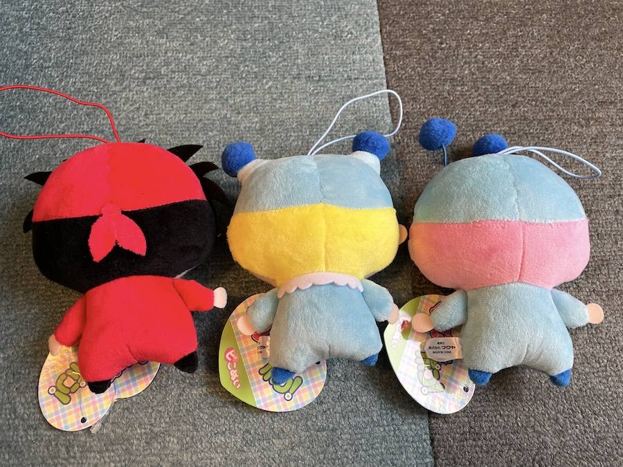
ピコぬいの背面です。
ヤシチの頭巾の結び目もちゃんとあります。
（結び目の位置はアニメ版のようですね）
レポートは以上ですが、ミルモたち妖精はぬいぐるみにぴったりだなぁと改めて思いました。
特に『ましゅもっち』の見た目のかわいさやふわふわ質感がとても良かったので、他の妖精も商品化してほしいところですね。
（ムルモとパピィを商品化希望！）
最後に記録も兼ねて、フクヤさんの公式HPから商品情報を引用します。
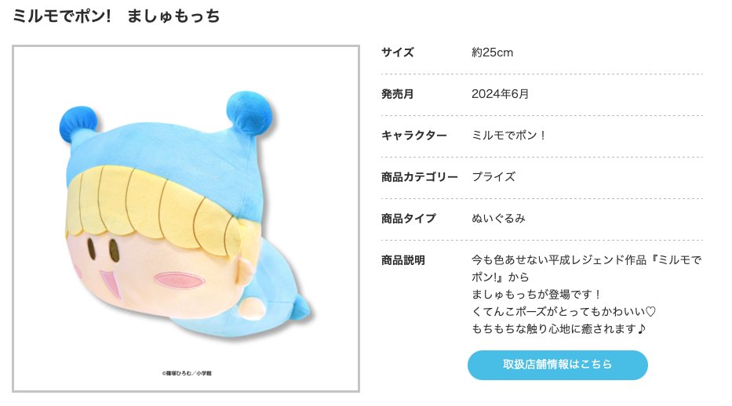
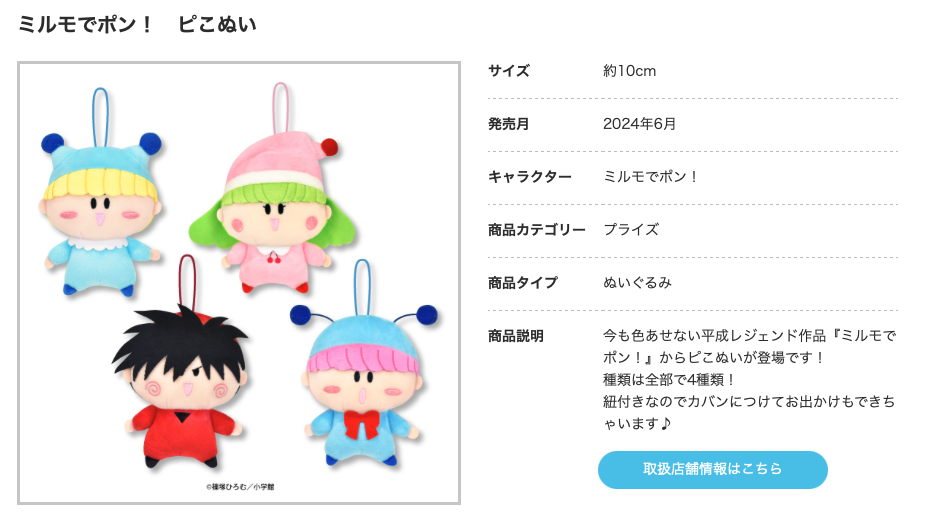
⭐もうすぐ登場⭐
— 【公式】フクヤ｜プライズ・カプセルトイ (@fancy_fukuya) June 27, 2024
大人気作品『ミルモでポン!』が
ピこぬいになって登場！
6月28(金)頃から全国のナムコのお店の取扱店舗、ナムクレにて順次展開予定です！
詳細はこちら🔽https://t.co/C4xqkq24LH pic.twitter.com/KDaACt97Gd
(2024/7/14)